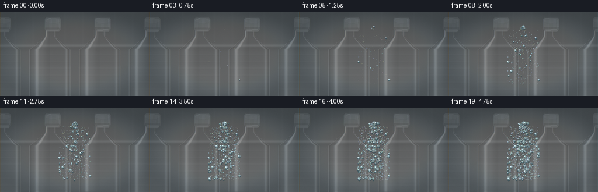
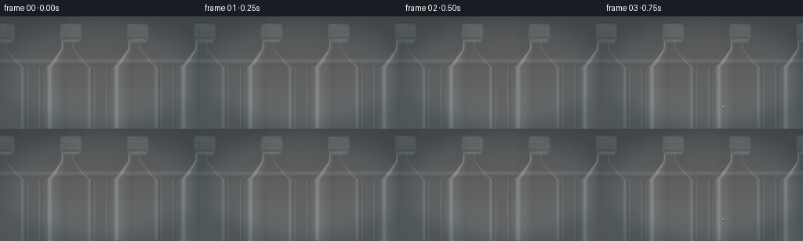
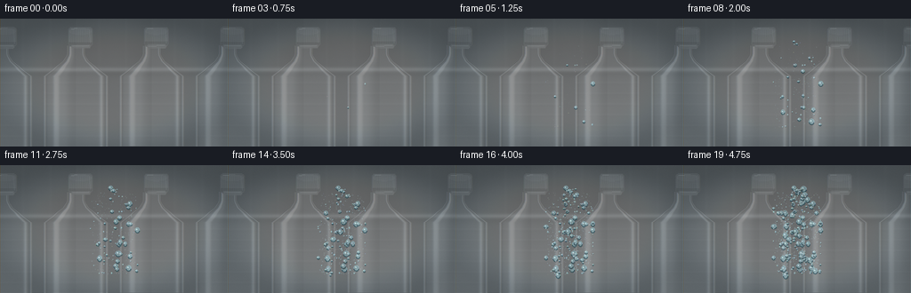
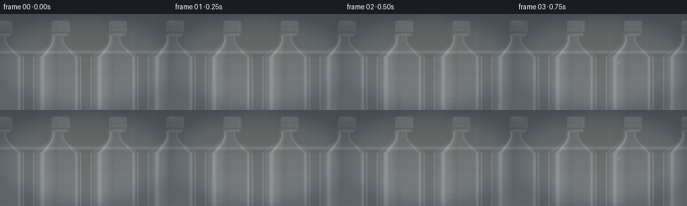
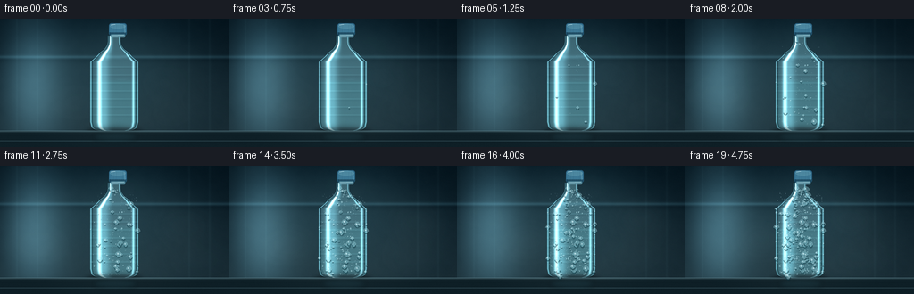
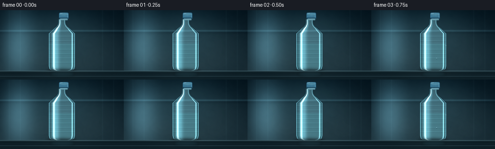
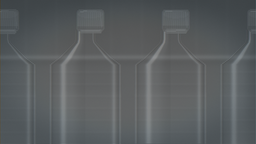
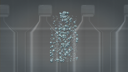
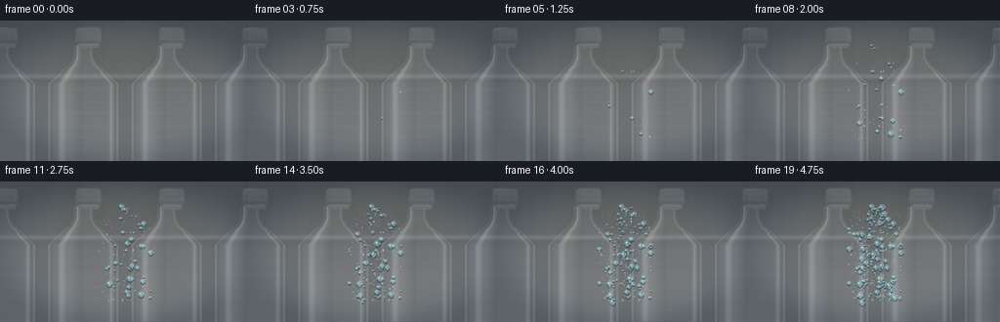
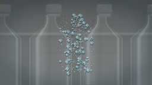

CODING AGENTS AS PIXEL WORLD MODELS
traex/DeepSeek-V4.1-Flash · phygen_115
点击播放 · 原生 RGB 像素
逐轮保存的候选
回放视频、检查图与代码变化。
每份候选均可单独播放。实际图片检查记录在下方工具轨迹中。
候选 01播放与检查图
点击播放 · 原生 RGB 像素


展开代码变化
--- 上一保存版本
+++ 本次保存版本
@@ -0,0 +1,420 @@
+from pathlib import Path
+
+import numpy as np
+from PIL import Image, ImageDraw, ImageFilter
+
+import artifact_io
+
+
+W, H = 256, 144
+FRAMES = 20
+FPS = 4.0
+SS = 4
+RW, RH = W * SS, H * SS
+RNG = np.random.default_rng(115)
+
+
+def smoothstep(value):
+ value = np.clip(value, 0.0, 1.0)
+ return value * value * (3.0 - 2.0 * value)
+
+
+def output_coords():
+ y, x = np.mgrid[0:RH, 0:RW]
+ return (x + 0.5) / SS, (y + 0.5) / SS
+
+
+X, Y = output_coords()
+
+
+def gaussian(value, center, width):
+ return np.exp(-0.5 * ((value - center) / width) ** 2)
+
+
+def make_background():
+ top = np.array([9.0, 20.0, 27.0])
+ bottom = np.array([31.0, 47.0, 54.0])
+ t = np.clip(Y / 144.0, 0.0, 1.0)[..., None]
+ image = top * (1.0 - t) + bottom * t
+
+ # Cool vertical light spill from the refrigerator lamp.
+ left_glow = gaussian(X, 36.0, 24.0) * gaussian(Y, 72.0, 58.0)
+ center_glow = gaussian(X, 128.0, 62.0) * gaussian(Y, 50.0, 50.0)
+ image += left_glow[..., None] * np.array([34.0, 51.0, 56.0])
+ image += center_glow[..., None] * np.array([8.0, 16.0, 18.0])
+
+ # Faint molded ribs and a defocused shelf in the refrigerator wall.
+ ribs = (
+ gaussian(X, 19.0, 0.7)
+ + gaussian(X, 42.0, 0.7)
+ + gaussian(X, 212.0, 0.8)
+ + gaussian(X, 235.0, 0.8)
+ )
+ image += ribs[..., None] * np.array([3.5, 5.0, 5.0])
+ rear_shelf = gaussian(Y, 43.0, 1.3)
+ image += rear_shelf[..., None] * np.array([14.0, 22.0, 24.0])
+ image -= gaussian(Y, 46.0, 2.5)[..., None] * np.array([4.0, 5.0, 5.0])
+
+ # Very low-frequency mottling keeps the wall from looking like a flat fill.
+ small = RNG.normal(0.0, 1.0, (RH // 16, RW // 16)).astype(np.float32)
+ mottle = np.asarray(
+ Image.fromarray(((small - small.min()) / (np.ptp(small) + 1e-6) * 255).astype(np.uint8))
+ .resize((RW, RH), Image.Resampling.BICUBIC)
+ .filter(ImageFilter.GaussianBlur(8)),
+ dtype=np.float32,
+ )
+ image += (mottle[..., None] - 128.0) * 0.018
+ return np.clip(image, 0.0, 255.0)
+
+
+BG = make_background()
+
+
+def body_half_width(y):
+ keys_y = np.array([22.8, 29.5, 32.0, 43.5, 48.5, 116.0, 122.0, 126.0])
+ keys_w = np.array([7.4, 7.4, 8.2, 20.2, 27.2, 27.2, 25.8, 19.6])
+ hw = np.interp(y, keys_y, keys_w, left=0.0, right=0.0)
+ rounded = y > 120.0
+ ellipse = 27.2 * np.sqrt(np.clip(1.0 - ((y - 120.0) / 7.0) ** 2, 0.0, 1.0))
+ return np.where(rounded, np.minimum(hw, ellipse), hw)
+
+
+def build_bottle_layer():
+ hw = body_half_width(Y)
+ u = np.divide(X - 128.0, hw, out=np.zeros_like(X), where=hw > 0.01)
+ body_mask = (Y >= 22.0) & (Y <= 126.0) & (np.abs(u) <= 1.0) & (hw > 0.1)
+ z = np.sqrt(np.clip(1.0 - u * u, 0.0, 1.0))
+
+ # Transparent plastic is modeled as a displaced, tinted view of the room.
+ shift_x = np.rint(u * 6.8 * SS).astype(np.int32)
+ shift_y = np.rint((1.0 - z) * 1.7 * SS).astype(np.int32)
+ yy, xx = np.mgrid[0:RH, 0:RW]
+ sx = np.clip(xx + shift_x, 0, RW - 1)
+ sy = np.clip(yy + shift_y, 0, RH - 1)
+ refracted = BG[sy, sx]
+
+ tint = np.array([128.0, 183.0, 189.0])
+ image = refracted * 0.77 + tint * 0.11
+
+ # Water in the lower half adds a restrained blue-green body and a soft line.
+ water_zone = smoothstep((Y - 67.0) / 5.0) * smoothstep((124.0 - Y) / 4.0)
+ image = image * (1.0 - 0.18 * water_zone[..., None]) + (
+ np.array([76.0, 147.0, 156.0]) * 0.18 * water_zone[..., None]
+ )
+ waterline = gaussian(Y, 67.0 + 0.65 * np.sin((X - 128.0) * 0.20), 0.55)
+ image += waterline[..., None] * np.array([44.0, 69.0, 70.0]) * water_zone[..., None]
+
+ # Cylindrical shading, edge darkening, and broad studio reflections.
+ edge = smoothstep((np.abs(u) - 0.72) / 0.28)
+ image -= edge[..., None] * np.array([19.0, 22.0, 22.0])
+ left_spec = gaussian(u, -0.61, 0.055) * (0.72 + 0.28 * z)
+ left_soft = gaussian(u, -0.42, 0.15)
+ right_spec = gaussian(u, 0.79, 0.035)
+ shoulder_boost = 1.0 + 1.2 * gaussian(Y, 37.0, 7.0)
+ image += left_spec[..., None] * np.array([135.0, 184.0, 190.0]) * shoulder_boost[..., None]
+ image += left_soft[..., None] * np.array([28.0, 48.0, 52.0])
+ image += right_spec[..., None] * np.array([77.0, 111.0, 116.0])
+
+ # Fine horizontal ribs around the bottle body.
+ rib_phase = np.mod(Y - 53.0, 9.0)
+ rib = np.exp(-0.5 * ((rib_phase - 1.0) / 0.55) ** 2)
+ rib *= (Y > 52.0) & (Y < 113.0)
+ image += rib[..., None] * np.array([9.0, 13.0, 13.0]) * (0.35 + 0.65 * z[..., None])
+ image -= (
+ np.exp(-0.5 * ((rib_phase - 2.5) / 0.70) ** 2)[..., None]
+ * np.array([4.0, 5.0, 5.0])
+ * ((Y > 52.0) & (Y < 113.0))[..., None]
+ )
+
+ # A narrow dark inner edge gives the thin wall depth.
+ inner_edge = gaussian(np.abs(u), 0.925, 0.025)
+ image -= inner_edge[..., None] * np.array([30.0, 36.0, 37.0])
+ rim = gaussian(np.abs(u), 0.955, 0.018)
+ image += rim[..., None] * np.array([70.0, 102.0, 108.0])
+
+ alpha = body_mask.astype(np.float32)
+ alpha *= 1.0 - 0.10 * gaussian(Y, 126.0, 1.5)
+ return np.clip(image, 0.0, 255.0), alpha
+
+
+BOTTLE, BOTTLE_ALPHA = build_bottle_layer()
+
+
+def composite_bottle(base):
+ a = BOTTLE_ALPHA[..., None]
+ return base * (1.0 - a) + BOTTLE * a
+
+
+def draw_cap_and_neck(image):
+ canvas = Image.fromarray(np.clip(image, 0.0, 255.0).astype(np.uint8), "RGB")
+ draw = ImageDraw.Draw(canvas, "RGBA")
+ scale = SS
+ cap_box = tuple(int(v * scale) for v in (121.6, 7.2, 142.2, 23.7))
+ draw.rounded_rectangle(cap_box, radius=2.7 * scale, fill=(52, 102, 129, 255))
+ draw.rounded_rectangle(
+ tuple(int(v * scale) for v in (122.4, 8.1, 141.4, 21.7)),
+ radius=2.2 * scale,
+ fill=(70, 128, 154, 255),
+ )
+ draw.ellipse(
+ tuple(int(v * scale) for v in (122.7, 7.9, 141.1, 13.7)),
+ fill=(94, 151, 172, 255),
+ )
+ draw.rectangle(
+ tuple(int(v * scale) for v in (122.2, 19.6, 141.6, 22.2)),
+ fill=(35, 77, 98, 255),
+ )
+ for x in np.linspace(124.0, 139.8, 12):
+ draw.line(
+ (int(x * scale), int(9.0 * scale), int((x - 0.25) * scale), int(21.5 * scale)),
+ fill=(29, 67, 86, 95),
+ width=max(1, SS // 2),
+ )
+ draw.line(
+ (int((x + 0.55) * scale), int(9.2 * scale), int((x + 0.30) * scale), int(21.3 * scale)),
+ fill=(132, 184, 199, 55),
+ width=max(1, SS // 2),
+ )
+ draw.line(
+ tuple(int(v * scale) for v in (124.0, 8.7, 129.0, 8.2)),
+ fill=(193, 224, 231, 190),
+ width=SS,
+ )
+ draw.line(
+ tuple(int(v * scale) for v in (139.2, 9.0, 140.0, 20.5)),
+ fill=(168, 207, 216, 70),
+ width=SS,
+ )
+
+ # Neck ring and thread catch the cold room light.
+ draw.rounded_rectangle(
+ tuple(int(v * scale) for v in (124.0, 21.8, 140.2, 25.1)),
+ radius=1.1 * scale,
+ fill=(99, 147, 160, 210),
+ )
+ draw.line(
+ tuple(int(v * scale) for v in (125.2, 23.0, 138.8, 22.6)),
+ fill=(190, 222, 226, 150),
+ width=SS,
+ )
+ return np.asarray(canvas, dtype=np.float32)
+
+
+def make_mist_layer(frame):
+ phase = frame / (FRAMES - 1)
+ layer = Image.new("L", (RW, RH), 0)
+ draw = ImageDraw.Draw(layer)
+ wisps = [
+ (41.0, 55.0, 24.0, 10.0, 18.0, 0.10),
+ (61.0, 92.0, 31.0, 13.0, 24.0, 0.14),
+ (190.0, 69.0, 29.0, 12.0, 21.0, 0.13),
+ (210.0, 109.0, 34.0, 11.0, 19.0, 0.09),
+ (147.0, 31.0, 30.0, 8.0, 14.0, 0.07),
+ ]
+ for i, (cx, cy, rx, ry, drift, strength) in enumerate(wisps):
+ x = cx + drift * np.sin(phase * 2.0 * np.pi + i * 1.7)
+ y = cy - 7.0 * phase + 2.5 * np.sin(phase * 3.2 * np.pi + i)
+ alpha = int(255.0 * strength * (0.45 + 0.55 * phase))
+ draw.ellipse(
+ tuple(
+ int(v * SS)
+ for v in (x - rx, y - ry, x + rx, y + ry)
+ ),
+ fill=alpha,
+ )
+ layer = layer.filter(ImageFilter.GaussianBlur(12 * SS))
+ arr = np.asarray(layer, dtype=np.float32) / 255.0
+ return arr
+
+
+def draw_shelf_and_shadow(image):
+ canvas = Image.fromarray(np.clip(image, 0.0, 255.0).astype(np.uint8), "RGB")
+ draw = ImageDraw.Draw(canvas, "RGBA")
+ # Contact shadow and reflected shelf surface.
+ shadow = Image.new("RGBA", (RW, RH), (0, 0, 0, 0))
+ sdraw = ImageDraw.Draw(shadow)
+ sdraw.ellipse(
+ tuple(int(v * SS) for v in (96.0, 122.5, 160.0, 135.5)),
+ fill=(2, 8, 10, 130),
+ )
+ shadow = shadow.filter(ImageFilter.GaussianBlur(3.2 * SS))
+ canvas = Image.alpha_composite(canvas.convert("RGBA"), shadow)
+
+ draw = ImageDraw.Draw(canvas, "RGBA")
+ draw.rectangle(
+ tuple(int(v * SS) for v in (0.0, 126.2, 256.0, 144.0)),
+ fill=(27, 42, 47, 255),
+ )
+ for y, color in [
+ (126.2, (102, 131, 137, 165)),
+ (127.4, (56, 77, 82, 210)),
+ (130.5, (21, 34, 38, 210)),
+ (137.2, (63, 85, 91, 80)),
+ ]:
+ draw.line(
+ (0, int(y * SS), RW, int(y * SS)),
+ fill=color,
+ width=max(1, int(SS * 0.8)),
+ )
+ # Subtle reflected bottle color on the shelf.
+ reflection = Image.new("RGBA", (RW, RH), (0, 0, 0, 0))
+ rdraw = ImageDraw.Draw(reflection)
+ rdraw.ellipse(
+ tuple(int(v * SS) for v in (104.0, 126.0, 154.0, 138.5)),
+ fill=(57, 100, 110, 42),
+ )
+ reflection = reflection.filter(ImageFilter.GaussianBlur(2.8 * SS))
+ canvas = Image.alpha_composite(canvas, reflection)
+ return np.asarray(canvas, dtype=np.float32)
+
+
+def build_droplets():
+ count = 470
+ ys = RNG.uniform(25.0, 124.2, count)
+ # Bias droplets toward the broad front face while retaining edge detail.
+ us = np.clip(RNG.normal(0.0, 0.58, count), -0.985, 0.985)
+ base_radius = 0.35 + 2.65 * RNG.random(count) ** 3.2
+ threshold = 0.025 + 0.86 * RNG.random(count) ** 0.68
+ elongation = RNG.uniform(0.85, 1.30, count)
+ phase = RNG.uniform(0.0, 2.0 * np.pi, count)
+ large = base_radius > 1.35
+ xs = np.empty(count)
+ for i in range(count):
+ xs[i] = 128.0 + us[i] * body_half_width(ys[i]) * 0.985
+ return {
+ "x": xs,
+ "y": ys,
+ "u": us,
+ "radius": base_radius,
+ "threshold": threshold,
+ "elongation": elongation,
+ "phase": phase,
+ "large": large,
+ }
+
+
+DROPS = build_droplets()
+
+
+def draw_condensation(canvas, frame):
+ phase = frame / (FRAMES - 1)
+ layer = Image.new("RGBA", (RW, RH), (0, 0, 0, 0))
+ draw = ImageDraw.Draw(layer, "RGBA")
+ grow = smoothstep((phase - DROPS["threshold"]) / 0.24)
+ radii = DROPS["radius"] * (0.72 * grow + 0.28 * np.sqrt(grow))
+ active = radii > 0.06
+
+ order = np.argsort(-radii)
+ for i in order:
+ if not active[i]:
+ continue
+ r = float(radii[i])
+ x = float(DROPS["x"][i] + 0.18 * np.sin(phase * 2.5 * np.pi + DROPS["phase"][i]))
+ y = float(DROPS["y"][i])
+ rx = r * (0.95 + 0.08 * np.cos(DROPS["phase"][i]))
+ ry = r * float(DROPS["elongation"][i])
+ if rx < 0.16:
+ continue
+ box = tuple(int(v * SS) for v in (x - rx, y - ry, x + rx, y + ry))
+ if box[2] <= box[0] or box[3] <= box[1]:
+ continue
+ if r > 0.55:
+ draw.ellipse(
+ tuple(int(v * SS) for v in (x - rx + 0.22, y - ry + 0.34, x + rx + 0.22, y + ry + 0.34)),
+ fill=(2, 18, 23, 62),
+ )
+ draw.ellipse(box, fill=(148, 203, 211, 82), outline=(193, 229, 232, 92), width=max(1, SS // 2))
+ if r > 1.0:
+ # Dark lower crescent and a crisp upper specular bead sell the volume.
+ draw.arc(
+ box,
+ start=10,
+ end=170,
+ fill=(35, 78, 88, 115),
+ width=max(1, SS),
+ )
+ hx = x - 0.25 * rx
+ hy = y - 0.32 * ry
+ hr = max(0.13, min(rx * 0.35, ry * 0.32))
+ draw.ellipse(
+ tuple(int(v * SS) for v in (hx - hr, hy - hr, hx + hr, hy + hr)),
+ fill=(228, 248, 249, 220 if r > 0.7 else 150),
+ )
+ if r > 2.0:
+ bx = x + 0.28 * rx
+ by = y + 0.30 * ry
+ br = max(0.12, hr * 0.45)
+ draw.ellipse(
+ tuple(int(v * SS) for v in (bx - br, by - br, bx + br, by + br)),
+ fill=(216, 242, 244, 110),
+ )
+
+ # A second, much finer population becomes visible as surface haze.
+ haze_count = 620
+ xs = 103.0 + RNG.random(haze_count) * 50.0
+ ys = 31.0 + RNG.random(haze_count) * 92.0
+ onset = RNG.uniform(0.10, 0.72, haze_count)
+ haze_alpha = smoothstep((phase - onset) / 0.25) * (0.16 + 0.22 * phase)
+ for x, y, a in zip(xs, ys, haze_alpha):
+ if a <= 0.01:
+ continue
+ r = 0.20 + 0.28 * RNG.random()
+ draw.ellipse(
+ tuple(int(v * SS) for v in (x - r, y - r, x + r, y + r)),
+ fill=(211, 240, 242, int(255 * a)),
+ )
+
+ canvas = Image.alpha_composite(canvas.convert("RGBA"), layer)
+ return canvas
+
+
+def grade_frame(image, frame):
+ image = np.asarray(image, dtype=np.float32)
+ phase = frame / (FRAMES - 1)
+
+ # Gentle cold grade, contrast, vignette, and a trace of sensor texture.
+ image = (image - 128.0) * 1.055 + 128.0
+ image[..., 0] *= 0.975
+ image[..., 1] *= 1.015
+ image[..., 2] *= 1.035
+ vx = (X - 128.0) / 128.0
+ vy = (Y - 72.0) / 72.0
+ vignette = 1.0 - 0.18 * smoothstep((vx * vx * 0.72 + vy * vy * 0.72 - 0.18) / 0.82)
+ image *= vignette[..., None]
+ grain = RNG.normal(0.0, 1.2 + 0.25 * phase, (RH, RW, 1))
+ image += grain
+
+ # Slight cooling around the perimeter and warm neutral highlights.
+ edge_cool = smoothstep((np.sqrt(vx * vx + vy * vy) - 0.55) / 0.55)
+ image[..., 0] -= 3.0 * edge_cool
+ image[..., 2] += 2.0 * edge_cool
+ return np.clip(image, 0.0, 255.0).astype(np.uint8)
+
+
+def render_frame(frame):
+ image = composite_bottle(BG.copy())
+ image = draw_cap_and_neck(image)
+
+ mist = make_mist_layer(frame)
+ mist_color = np.array([172.0, 205.0, 209.0])
+ image = image * (1.0 - mist[..., None] * 0.42) + mist_color * mist[..., None] * 0.42
+
+ image = draw_shelf_and_shadow(image)
+ canvas = Image.fromarray(np.clip(image, 0.0, 255.0).astype(np.uint8), "RGB").convert("RGBA")
+ canvas = draw_condensation(canvas, frame)
+ image = np.asarray(canvas.convert("RGB"), dtype=np.float32)
+ image = grade_frame(image, frame)
+ return np.asarray(
+ Image.fromarray(image, "RGB").resize((W, H), Image.Resampling.LANCZOS),
+ dtype=np.uint8,
+ )
+
+
+def main():
+ frames = np.stack([render_frame(i) for i in range(FRAMES)])
+ artifact_io.save(frames, Path(__file__).resolve().parent)
+ print(f"saved {frames.shape} RGB frames")
+
+
+if __name__ == "__main__":
+ main()
候选 02播放与检查图
点击播放 · 原生 RGB 像素


展开代码变化
--- 上一保存版本
+++ 本次保存版本
@@ -32,16 +32,16 @@
def make_background():
- top = np.array([9.0, 20.0, 27.0])
- bottom = np.array([31.0, 47.0, 54.0])
+ top = np.array([14.0, 27.0, 34.0])
+ bottom = np.array([42.0, 59.0, 65.0])
t = np.clip(Y / 144.0, 0.0, 1.0)[..., None]
image = top * (1.0 - t) + bottom * t
# Cool vertical light spill from the refrigerator lamp.
left_glow = gaussian(X, 36.0, 24.0) * gaussian(Y, 72.0, 58.0)
center_glow = gaussian(X, 128.0, 62.0) * gaussian(Y, 50.0, 50.0)
- image += left_glow[..., None] * np.array([34.0, 51.0, 56.0])
- image += center_glow[..., None] * np.array([8.0, 16.0, 18.0])
+ image += left_glow[..., None] * np.array([43.0, 62.0, 67.0])
+ image += center_glow[..., None] * np.array([15.0, 25.0, 27.0])
# Faint molded ribs and a defocused shelf in the refrigerator wall.
ribs = (
@@ -52,7 +52,7 @@
)
image += ribs[..., None] * np.array([3.5, 5.0, 5.0])
rear_shelf = gaussian(Y, 43.0, 1.3)
- image += rear_shelf[..., None] * np.array([14.0, 22.0, 24.0])
+ image += rear_shelf[..., None] * np.array([17.0, 26.0, 28.0])
image -= gaussian(Y, 46.0, 2.5)[..., None] * np.array([4.0, 5.0, 5.0])
# Very low-frequency mottling keeps the wall from looking like a flat fill.
@@ -71,8 +71,8 @@
def body_half_width(y):
- keys_y = np.array([22.8, 29.5, 32.0, 43.5, 48.5, 116.0, 122.0, 126.0])
- keys_w = np.array([7.4, 7.4, 8.2, 20.2, 27.2, 27.2, 25.8, 19.6])
+ keys_y = np.array([22.8, 29.5, 31.5, 36.0, 40.0, 43.5, 48.5, 116.0, 122.0, 126.0])
+ keys_w = np.array([7.4, 7.4, 8.0, 11.0, 16.3, 20.2, 27.2, 27.2, 25.8, 19.6])
hw = np.interp(y, keys_y, keys_w, left=0.0, right=0.0)
rounded = y > 120.0
ellipse = 27.2 * np.sqrt(np.clip(1.0 - ((y - 120.0) / 7.0) ** 2, 0.0, 1.0))
@@ -94,26 +94,27 @@
refracted = BG[sy, sx]
tint = np.array([128.0, 183.0, 189.0])
- image = refracted * 0.77 + tint * 0.11
+ image = refracted * 0.86 + tint * 0.23
+ image += np.array([10.0, 14.0, 15.0])
# Water in the lower half adds a restrained blue-green body and a soft line.
water_zone = smoothstep((Y - 67.0) / 5.0) * smoothstep((124.0 - Y) / 4.0)
- image = image * (1.0 - 0.18 * water_zone[..., None]) + (
- np.array([76.0, 147.0, 156.0]) * 0.18 * water_zone[..., None]
+ image = image * (1.0 - 0.22 * water_zone[..., None]) + (
+ np.array([80.0, 153.0, 161.0]) * 0.22 * water_zone[..., None]
)
waterline = gaussian(Y, 67.0 + 0.65 * np.sin((X - 128.0) * 0.20), 0.55)
image += waterline[..., None] * np.array([44.0, 69.0, 70.0]) * water_zone[..., None]
# Cylindrical shading, edge darkening, and broad studio reflections.
edge = smoothstep((np.abs(u) - 0.72) / 0.28)
- image -= edge[..., None] * np.array([19.0, 22.0, 22.0])
+ image -= edge[..., None] * np.array([16.0, 19.0, 19.0])
left_spec = gaussian(u, -0.61, 0.055) * (0.72 + 0.28 * z)
left_soft = gaussian(u, -0.42, 0.15)
right_spec = gaussian(u, 0.79, 0.035)
shoulder_boost = 1.0 + 1.2 * gaussian(Y, 37.0, 7.0)
- image += left_spec[..., None] * np.array([135.0, 184.0, 190.0]) * shoulder_boost[..., None]
- image += left_soft[..., None] * np.array([28.0, 48.0, 52.0])
- image += right_spec[..., None] * np.array([77.0, 111.0, 116.0])
+ image += left_spec[..., None] * np.array([155.0, 201.0, 205.0]) * shoulder_boost[..., None]
+ image += left_soft[..., None] * np.array([36.0, 57.0, 61.0])
+ image += right_spec[..., None] * np.array([92.0, 128.0, 132.0])
# Fine horizontal ribs around the bottle body.
rib_phase = np.mod(Y - 53.0, 9.0)
@@ -130,7 +131,7 @@
inner_edge = gaussian(np.abs(u), 0.925, 0.025)
image -= inner_edge[..., None] * np.array([30.0, 36.0, 37.0])
rim = gaussian(np.abs(u), 0.955, 0.018)
- image += rim[..., None] * np.array([70.0, 102.0, 108.0])
+ image += rim[..., None] * np.array([84.0, 119.0, 124.0])
alpha = body_mask.astype(np.float32)
alpha *= 1.0 - 0.10 * gaussian(Y, 126.0, 1.5)
@@ -269,12 +270,12 @@
def build_droplets():
- count = 470
+ count = 235
ys = RNG.uniform(25.0, 124.2, count)
# Bias droplets toward the broad front face while retaining edge detail.
us = np.clip(RNG.normal(0.0, 0.58, count), -0.985, 0.985)
- base_radius = 0.35 + 2.65 * RNG.random(count) ** 3.2
- threshold = 0.025 + 0.86 * RNG.random(count) ** 0.68
+ base_radius = 0.48 + 3.10 * RNG.random(count) ** 2.8
+ threshold = 0.04 + 0.82 * RNG.random(count) ** 0.62
elongation = RNG.uniform(0.85, 1.30, count)
phase = RNG.uniform(0.0, 2.0 * np.pi, count)
large = base_radius > 1.35
@@ -318,27 +319,27 @@
box = tuple(int(v * SS) for v in (x - rx, y - ry, x + rx, y + ry))
if box[2] <= box[0] or box[3] <= box[1]:
continue
- if r > 0.55:
+ if r > 0.48:
draw.ellipse(
tuple(int(v * SS) for v in (x - rx + 0.22, y - ry + 0.34, x + rx + 0.22, y + ry + 0.34)),
fill=(2, 18, 23, 62),
)
- draw.ellipse(box, fill=(148, 203, 211, 82), outline=(193, 229, 232, 92), width=max(1, SS // 2))
+ draw.ellipse(box, fill=(147, 202, 210, 92), outline=(184, 226, 230, 112), width=max(1, SS // 2))
if r > 1.0:
# Dark lower crescent and a crisp upper specular bead sell the volume.
draw.arc(
box,
start=10,
end=170,
- fill=(35, 78, 88, 115),
+ fill=(27, 69, 79, 142),
width=max(1, SS),
)
hx = x - 0.25 * rx
hy = y - 0.32 * ry
- hr = max(0.13, min(rx * 0.35, ry * 0.32))
+ hr = max(0.11, min(rx * 0.27, ry * 0.25))
draw.ellipse(
tuple(int(v * SS) for v in (hx - hr, hy - hr, hx + hr, hy + hr)),
- fill=(228, 248, 249, 220 if r > 0.7 else 150),
+ fill=(220, 243, 245, 185 if r > 0.7 else 120),
)
if r > 2.0:
bx = x + 0.28 * rx
@@ -350,18 +351,18 @@
)
# A second, much finer population becomes visible as surface haze.
- haze_count = 620
+ haze_count = 390
xs = 103.0 + RNG.random(haze_count) * 50.0
ys = 31.0 + RNG.random(haze_count) * 92.0
onset = RNG.uniform(0.10, 0.72, haze_count)
- haze_alpha = smoothstep((phase - onset) / 0.25) * (0.16 + 0.22 * phase)
+ haze_alpha = smoothstep((phase - onset) / 0.25) * (0.07 + 0.13 * phase)
for x, y, a in zip(xs, ys, haze_alpha):
if a <= 0.01:
continue
r = 0.20 + 0.28 * RNG.random()
draw.ellipse(
tuple(int(v * SS) for v in (x - r, y - r, x + r, y + r)),
- fill=(211, 240, 242, int(255 * a)),
+ fill=(201, 231, 234, int(255 * a)),
)
canvas = Image.alpha_composite(canvas.convert("RGBA"), layer)
候选 03播放与检查图
点击播放 · 原生 RGB 像素

展开代码变化
--- 上一保存版本
+++ 本次保存版本
@@ -71,8 +71,8 @@
def body_half_width(y):
- keys_y = np.array([22.8, 29.5, 31.5, 36.0, 40.0, 43.5, 48.5, 116.0, 122.0, 126.0])
- keys_w = np.array([7.4, 7.4, 8.0, 11.0, 16.3, 20.2, 27.2, 27.2, 25.8, 19.6])
+ keys_y = np.array([19.0, 26.0, 29.5, 34.0, 38.0, 42.5, 48.5, 116.0, 122.0, 126.0])
+ keys_w = np.array([7.1, 7.1, 7.8, 10.8, 16.0, 20.2, 27.2, 27.2, 25.8, 19.6])
hw = np.interp(y, keys_y, keys_w, left=0.0, right=0.0)
rounded = y > 120.0
ellipse = 27.2 * np.sqrt(np.clip(1.0 - ((y - 120.0) / 7.0) ** 2, 0.0, 1.0))
@@ -82,7 +82,7 @@
def build_bottle_layer():
hw = body_half_width(Y)
u = np.divide(X - 128.0, hw, out=np.zeros_like(X), where=hw > 0.01)
- body_mask = (Y >= 22.0) & (Y <= 126.0) & (np.abs(u) <= 1.0) & (hw > 0.1)
+ body_mask = (Y >= 19.0) & (Y <= 126.0) & (np.abs(u) <= 1.0) & (hw > 0.1)
z = np.sqrt(np.clip(1.0 - u * u, 0.0, 1.0))
# Transparent plastic is modeled as a displaced, tinted view of the room.
@@ -111,7 +111,7 @@
left_spec = gaussian(u, -0.61, 0.055) * (0.72 + 0.28 * z)
left_soft = gaussian(u, -0.42, 0.15)
right_spec = gaussian(u, 0.79, 0.035)
- shoulder_boost = 1.0 + 1.2 * gaussian(Y, 37.0, 7.0)
+ shoulder_boost = 1.0 + 1.2 * gaussian(Y, 34.5, 7.0)
image += left_spec[..., None] * np.array([155.0, 201.0, 205.0]) * shoulder_boost[..., None]
image += left_soft[..., None] * np.array([36.0, 57.0, 61.0])
image += right_spec[..., None] * np.array([92.0, 128.0, 132.0])
@@ -150,51 +150,51 @@
canvas = Image.fromarray(np.clip(image, 0.0, 255.0).astype(np.uint8), "RGB")
draw = ImageDraw.Draw(canvas, "RGBA")
scale = SS
- cap_box = tuple(int(v * scale) for v in (121.6, 7.2, 142.2, 23.7))
+ cap_box = tuple(int(v * scale) for v in (122.0, 5.0, 141.8, 19.0))
draw.rounded_rectangle(cap_box, radius=2.7 * scale, fill=(52, 102, 129, 255))
draw.rounded_rectangle(
- tuple(int(v * scale) for v in (122.4, 8.1, 141.4, 21.7)),
+ tuple(int(v * scale) for v in (122.7, 5.8, 141.1, 17.3)),
radius=2.2 * scale,
fill=(70, 128, 154, 255),
)
draw.ellipse(
- tuple(int(v * scale) for v in (122.7, 7.9, 141.1, 13.7)),
+ tuple(int(v * scale) for v in (123.0, 5.5, 140.8, 11.0)),
fill=(94, 151, 172, 255),
)
draw.rectangle(
- tuple(int(v * scale) for v in (122.2, 19.6, 141.6, 22.2)),
+ tuple(int(v * scale) for v in (122.5, 15.4, 141.3, 18.4)),
fill=(35, 77, 98, 255),
)
- for x in np.linspace(124.0, 139.8, 12):
+ for x in np.linspace(124.2, 139.6, 12):
draw.line(
- (int(x * scale), int(9.0 * scale), int((x - 0.25) * scale), int(21.5 * scale)),
+ (int(x * scale), int(7.1 * scale), int((x - 0.25) * scale), int(16.8 * scale)),
fill=(29, 67, 86, 95),
width=max(1, SS // 2),
)
draw.line(
- (int((x + 0.55) * scale), int(9.2 * scale), int((x + 0.30) * scale), int(21.3 * scale)),
+ (int((x + 0.55) * scale), int(7.3 * scale), int((x + 0.30) * scale), int(16.7 * scale)),
fill=(132, 184, 199, 55),
width=max(1, SS // 2),
)
draw.line(
- tuple(int(v * scale) for v in (124.0, 8.7, 129.0, 8.2)),
+ tuple(int(v * scale) for v in (124.2, 6.8, 129.0, 6.2)),
fill=(193, 224, 231, 190),
width=SS,
)
draw.line(
- tuple(int(v * scale) for v in (139.2, 9.0, 140.0, 20.5)),
+ tuple(int(v * scale) for v in (139.1, 7.0, 139.9, 15.8)),
fill=(168, 207, 216, 70),
width=SS,
)
# Neck ring and thread catch the cold room light.
draw.rounded_rectangle(
- tuple(int(v * scale) for v in (124.0, 21.8, 140.2, 25.1)),
+ tuple(int(v * scale) for v in (124.0, 17.4, 140.2, 21.0)),
radius=1.1 * scale,
fill=(99, 147, 160, 210),
)
draw.line(
- tuple(int(v * scale) for v in (125.2, 23.0, 138.8, 22.6)),
+ tuple(int(v * scale) for v in (125.2, 18.9, 138.8, 18.4)),
fill=(190, 222, 226, 150),
width=SS,
)
候选 04播放与检查图

候选 05播放与检查图
点击播放 · 原生 RGB 像素


展开代码变化
--- 上一保存版本
+++ 本次保存版本
@@ -147,7 +147,7 @@
def draw_cap_and_neck(image):
- canvas = Image.fromarray(np.clip(image, 0.0, 255.0).astype(np.uint8), "RGB")
+ canvas = Image.fromarray(np.clip(image, 0.0, 255.0).astype(np.uint8))
draw = ImageDraw.Draw(canvas, "RGBA")
scale = SS
cap_box = tuple(int(v * scale) for v in (122.0, 5.0, 141.8, 19.0))
@@ -229,7 +229,7 @@
def draw_shelf_and_shadow(image):
- canvas = Image.fromarray(np.clip(image, 0.0, 255.0).astype(np.uint8), "RGB")
+ canvas = Image.fromarray(np.clip(image, 0.0, 255.0).astype(np.uint8))
draw = ImageDraw.Draw(canvas, "RGBA")
# Contact shadow and reflected shelf surface.
shadow = Image.new("RGBA", (RW, RH), (0, 0, 0, 0))
@@ -401,12 +401,12 @@
image = image * (1.0 - mist[..., None] * 0.42) + mist_color * mist[..., None] * 0.42
image = draw_shelf_and_shadow(image)
- canvas = Image.fromarray(np.clip(image, 0.0, 255.0).astype(np.uint8), "RGB").convert("RGBA")
+ canvas = Image.fromarray(np.clip(image, 0.0, 255.0).astype(np.uint8)).convert("RGBA")
canvas = draw_condensation(canvas, frame)
image = np.asarray(canvas.convert("RGB"), dtype=np.float32)
image = grade_frame(image, frame)
return np.asarray(
- Image.fromarray(image, "RGB").resize((W, H), Image.Resampling.LANCZOS),
+ Image.fromarray(image).resize((W, H), Image.Resampling.LANCZOS),
dtype=np.uint8,
)
可观测工具轨迹
实际执行的命令与返回图片。
命令 1exit 0
/bin/bash -c "pwd && rg --files -g 'prompt.txt' -g 'GENERATION_RULES.md' -g 'task_spec.json' -g '"'!node_modules'"'"
命令 2exit 0
/bin/bash -c 'ls -la'
命令 3exit 0
/bin/bash -c 'cat prompt.txt'
命令 4exit 0
/bin/bash -c 'cat GENERATION_RULES.md'
命令 5exit 0
/bin/bash -c 'cat task_spec.json'
命令 6exit 0
/bin/bash -c "sed -n '1,240p' artifact_io.py"
命令 7exit 0
/bin/bash -c "sed -n '1,240p' player_template.html"
命令 8exit 1
/bin/bash -c 'python generate.py'
命令 9exit 0
/bin/bash -c 'python generate.py'
命令 10exit 0
/bin/bash -c 'python generate.py'
命令 11exit 0
/bin/bash -c 'python generate.py'
命令 12exit 0
/bin/bash -c "python - <<'PY'
from pathlib import Path
import numpy as np
from PIL import Image
import json, hashlib
p=Path('.')
a=np.load('pixels.npz')['pixels']
print('npz', a.shape, a.dtype, int(a.min()), int(a.max()))
files=sorted((p/'frames').glob('*.png'))
print('pngs', len(files), [Image.open(f).size for f in files[:2]])
ims=np.stack([np.array(Image.open(f)) for f in files])
d=np.abs(ims[1:].astype(np.int16)-ims[:-1].astype(np.int16))
print('changed_pixels_per_transition', d.max(axis=(1,2,3)).tolist())
print('mean_abs_change', [round(float(x),3) for x in d.mean(axis=(1,2,3))])
print('player_bytes', (p/'index.html').stat().st_size)
print('spec', json.loads((p/'task_spec.json').read_text()))
print('sha256', hashlib.sha256(ims.tobytes()).hexdigest())
PY"命令 13exit 0
/bin/bash -c "python generate.py && python - <<'PY'
from pathlib import Path
import json
import numpy as np
from PIL import Image
import artifact_io
case=Path('.')
a=np.load(case/'pixels.npz')['pixels']
files=sorted((case/'frames').glob('*.png'))
assert a.shape == (144,256,20) and a.dtype == np.uint32
assert len(files) == 20
assert all(Image.open(f).size == (256,144) and Image.open(f).mode == 'RGB' for f in files)
assert (case/'index.html').stat().st_size > 1_000_000
print('FINAL OK', a.shape, len(files), (case/'index.html').stat().st_size)
PY"视觉工具实际返回图片 1

视觉工具实际返回图片 2

视觉工具实际返回图片 3

视觉工具实际返回图片 4

视觉工具实际返回图片 5

视觉工具实际返回图片 6

保存候选 5 份；完成命令 13 次；可验证图片返回 6 张。原始 API 响应与完整日志保留在本地。